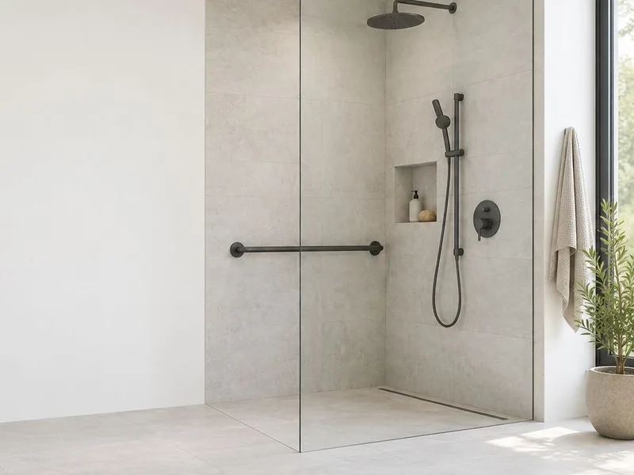
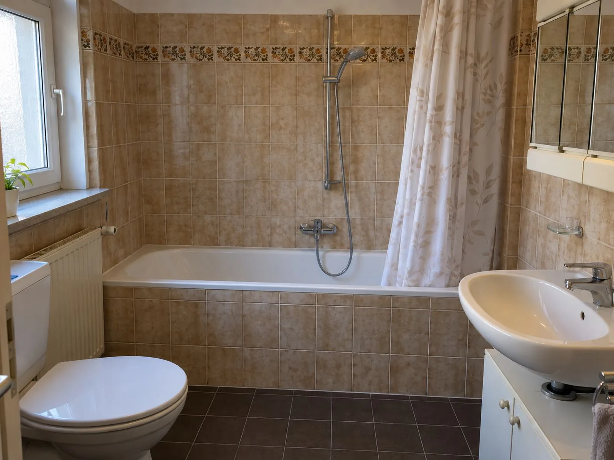
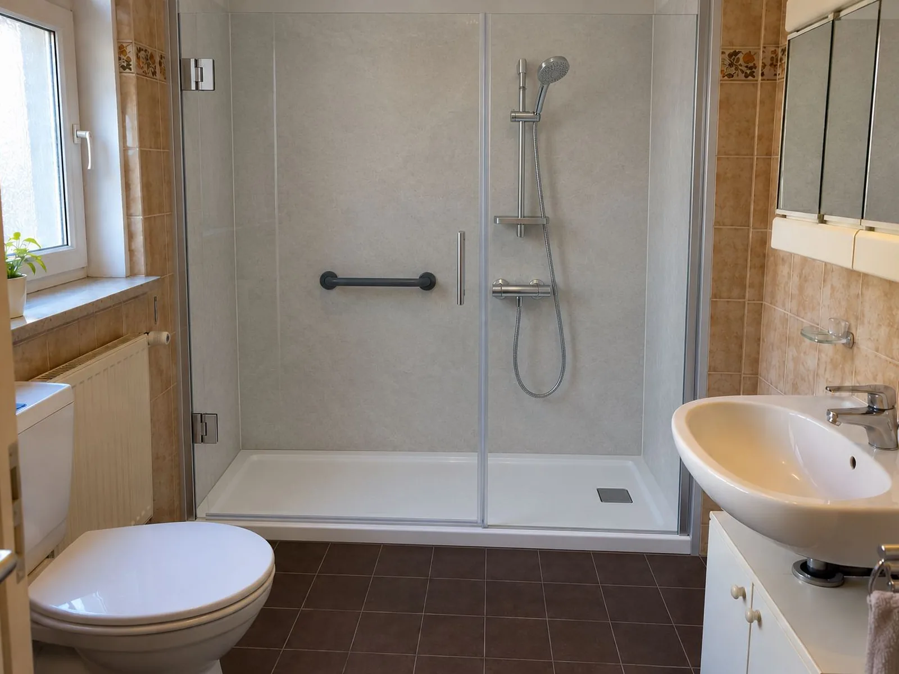

Barrierefreier Badumbau in Dortmund
Ein Bad, in dem Sie sich sicher bewegen – heute und in zehn Jahren. Wir planen den Umbau, koordinieren alle Gewerke und unterstützen Sie beim Zuschuss der Pflegekasse.
Oder anrufen: 0178 9176594

Was wir umbauen
- Bodengleiche Dusche statt Badewanne
- Rutschhemmende Fliesen
- Haltegriffe und Stützklappgriffe am WC
- Duschsitz oder Klappsitz
- Unterfahrbarer Waschtisch
- Breitere Türen, wo baulich möglich
- Erhöhtes WC
Altersgerecht oder behindertengerecht – wir richten uns nach Ihrem Bedarf, nicht nach einem Standardpaket. Auf Wunsch betrachten wir die ganze Wohnung.
bis zu 4.180 €
Zuschuss der Pflegekasse je Maßnahme nach § 40 Abs. 4 SGB XI – möglich ab Pflegegrad 1.
Den Antrag stellen Sie vor Beginn des Umbaus bei Ihrer Pflegekasse. Wir erstellen das nötige Angebot und helfen beim Antrag. Eine Bewilligung können wir nicht zusagen – darüber entscheidet die Pflegekasse.
Kommt ein Zuschuss für Ihr Bad in Frage?
Drei kurze Fragen, eine erste Einschätzung. Ihre Antworten bleiben in Ihrem Browser – sie werden weder gespeichert noch an uns übertragen.
So läuft Ihr Badumbau ab
Anfrage
Sie rufen an oder schreiben uns. Wir besprechen kurz, worum es geht.
Termin vor Ort
Wir sehen uns Bad oder Wohnung an, messen auf und hören zu, was Ihnen wichtig ist.
Angebot & Förderantrag
Sie erhalten ein schriftliches Angebot. Wenn ein Zuschuss möglich ist, helfen wir beim Antrag.
Umbau aus einer Hand
Wir koordinieren alle Gewerke bis zur Übergabe. Sie haben einen festen Ansprechpartner.
Von der Wanne zur Dusche
So kann Ihr Bad nach dem Umbau aussehen. Ziehen Sie den Regler, um vorher und nachher zu vergleichen.


BeispielvisualisierungDie Wanne mit hohem Rand kommt raus, eine flache Duschtasse mit Glastür, fugenarmer Wandverkleidung und Haltegriff kommt rein. Der Rest des Bades bleibt, wie er ist – das spart Zeit und Kosten.
Die Bilder sind computergenerierte Beispiele zur Veranschaulichung, kein Kundenprojekt. Echte Vorher-nachher-Fotos aus unseren Projekten folgen.
Fragen zum Badumbau
Wie hoch ist der Zuschuss der Pflegekasse?
Für Maßnahmen, die das Wohnumfeld verbessern, zahlt die Pflegekasse bis zu 4.180 € je Maßnahme (§ 40 Abs. 4 SGB XI). Voraussetzung ist ein festgestellter Pflegegrad – schon ab Pflegegrad 1. Wohnen mehrere Pflegebedürftige zusammen, kann sich der Betrag erhöhen. Über die Höhe entscheidet die Pflegekasse im Einzelfall.
Muss ich den Zuschuss vor dem Umbau beantragen?
Ja. Stellen Sie den Antrag bei Ihrer Pflegekasse, bevor die Arbeiten beginnen. Wir erstellen das Angebot, das Sie dafür brauchen, und helfen beim Ausfüllen.
Wie lange dauert ein Badumbau?
Ein typischer Umbau von der Wanne zur bodengleichen Dusche dauert meist ein bis zwei Wochen. Die genaue Dauer nennen wir Ihnen nach dem Termin vor Ort – verbindlich im Angebot.
Wie viel Schmutz und Lärm entsteht?
Abbrucharbeiten sind laut, das lässt sich nicht vermeiden. Wir kündigen laute Tage vorher an, decken Wege und Böden ab und hinterlassen die Wohnung jeden Tag besenrein.
Ich wohne zur Miete. Geht das trotzdem?
Ja, mit Erlaubnis Ihres Vermieters. Für Umbauten, die Barrieren reduzieren, haben Mieter darauf in der Regel einen Anspruch (§ 554 BGB). Wir helfen Ihnen, die Anfrage an den Vermieter vorzubereiten.
Was kostet ein barrierefreies Bad?
Das hängt von Größe, Zustand und Ausstattung ab. Nach dem kostenlosen Termin vor Ort erhalten Sie ein schriftliches Festpreisangebot – so sehen Sie, welcher Eigenanteil nach einem möglichen Zuschuss bleibt.
Ihr Bad, sicher und bequem.
Vereinbaren Sie einen kostenlosen Termin vor Ort. Wir melden uns innerhalb von zwei Werktagen.